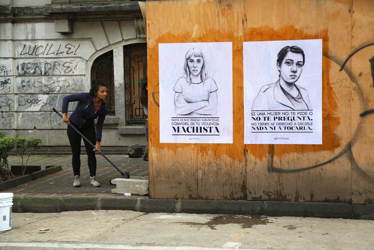
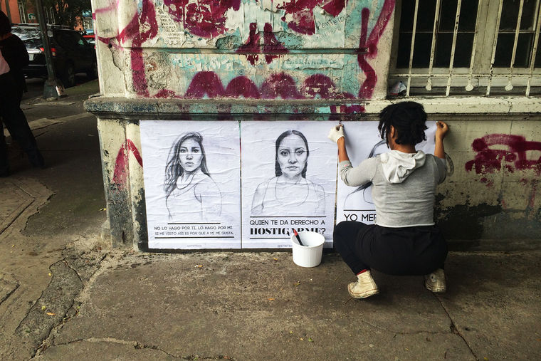

Do you remember when you were conscious of gender dynamics or a moment when you realized that you, as a woman, may be disadvantaged or discriminated against?
In college, I was always usually the only black woman in my class. I was surrounded by mostly white men and I was always good, really good. My talent was doubted not just as a woman but as a black woman. Specific to the artist field, when I’ve been on the receiving end of comments about me being a woman. Growing up, I was being sexualized all the time. My value was put on me in the context of my appearance. I don’t’ know if that was something I was aware of when I was younger.
What was that “a-ha” moment when you realized art was your calling?
I was never one of those kids who grew up drawing and making art. I didn’t pick up a pen or pencil until I was a junior [in high school] which was strange because my mother was an artist, but she never pushed me to do it. I saw a black and white picture of a young girl and I rendered it very well, it was detailed. I took it to my mother and she took it to my art teacher. She moved me from Art 1 to AP Art and let me do what I wanted to do. [The art teacher told me to] “Explore art, you’re really good. Draw what you want.”
Who are your influences?
I’m not just influenced by painters, I’m influenced by photographers and musicians: folks from Gordon Parks to Kara Walker to Bradford Young to Drake to Nicki Minaj. I’m influenced by my peers. Frida [Kahlo] was a great storyteller in her work.
Do you have a specific memory that comes to mind that motivated you to start the “Stop Telling Women to Smile” campaign?
I don’t have a specific thing that happened to me as far as street harassment. I have a specific moment with street art that pushed me to do this project, as I’m harassed on the street almost daily. I was working on a mural in Philadelphia and was already thinking about using the concept of public art and street art and how you can use the environment as a medium, a canvass. I had come to the work of JR, a huge street artist. He’s been doing these huge photographs all around the world and his work really showed me how large you can use this medium. His work really showed me how large you can use this medium. That’s what started me thinking about how my work can translate to wheat paste.
What is the immediate impact of the campaign and what are you hoping are the long-term impacts?
That’s the thing I’m figuring out with these cities. I go there, I do work, and then I leave. I don’t want it to feel like there’s no real impact. The work is temporary. That’s the nature of the work, it can stay up for two days or two months, you would never know. When it’s in a city I don’t live in, I can’t monitor it. So it’s important for me that I’m creating a team, a community involved, who can continue to monitor the reaction people are having. I can’t be everywhere, but I want the work to be everywhere.
If women could have any superpower what would it be?
A shield to block out all the stuff that comes to her and has nothing to do with who she is as an individual. We are fine the way we are right now. We aren’t perfect, we aren’t saints; we’re human beings, just like men.
How do you think art can communicate differently than, let’s say, a politician or a demonstration? What’s unique about it in expressing awareness or social woes?
Art has a huge advantage in that it is visual and creates an immediacy: you immediately see it and immediately get it. When I think of my art, specifically street harassment and these other books, blogs, things, around street harassment, art creates a community because anyone can be involved in it. It’s simple. My art is an in-your-face, on-the-nose type of art. It’s not something you need to think about. It’s direct. That has a huge place when you get people wrapped around a movement. Not a lot of words, or talking, it’s just right there. Political artists have always been able to do that. It just takes an idea and illustrates it in one simple image that people can see and understand. One image can go everywhere.